Sistema accesible de dosimetria de voz y monitorización ambiental
Desarrollo de una plataforma web para apoyar a los fonoaudiologos UBB en la prevención de trastornos de la voz en docentes, con análisis de datos estadisticos y gestión de usuarios. Incluye el desarrollo e integración del hardware (IoT).
Django
Bootstrap
Arduino IDE
PostgreSQL
Docker
Nginx
 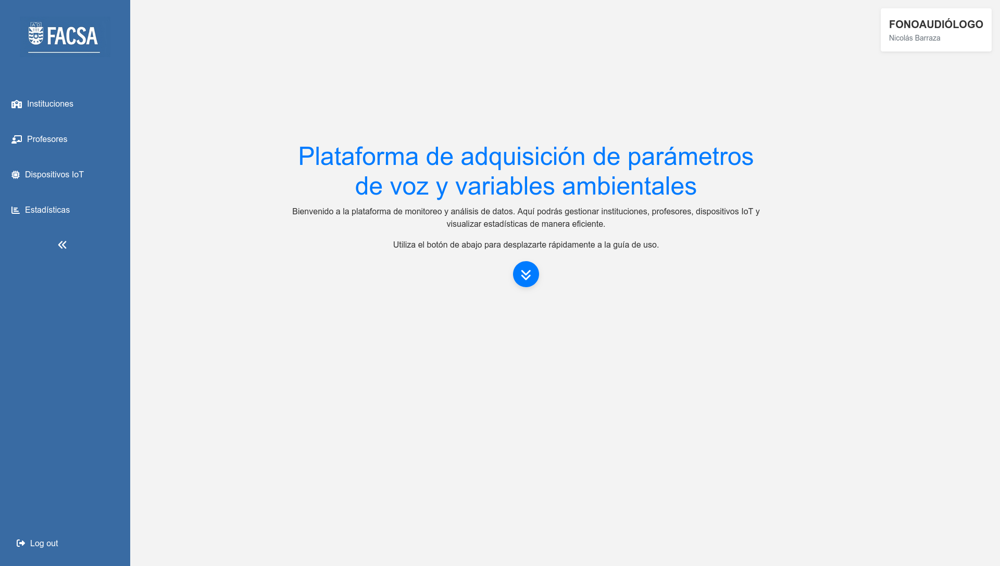
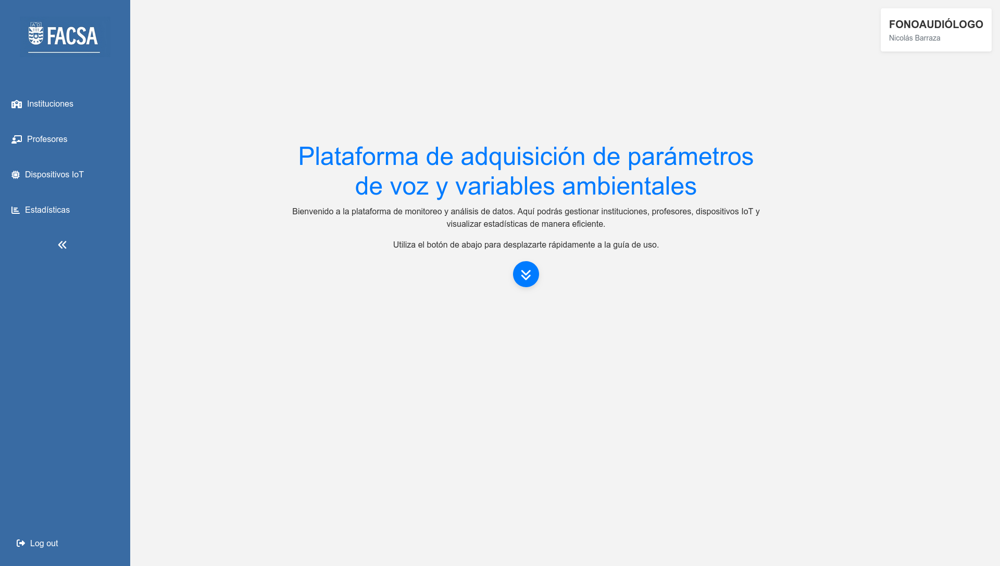
 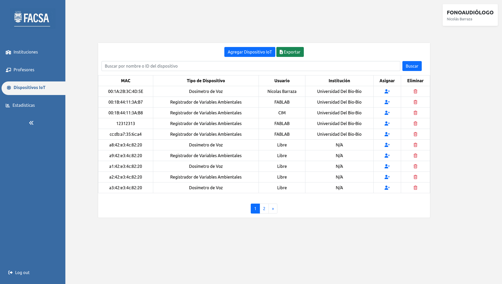
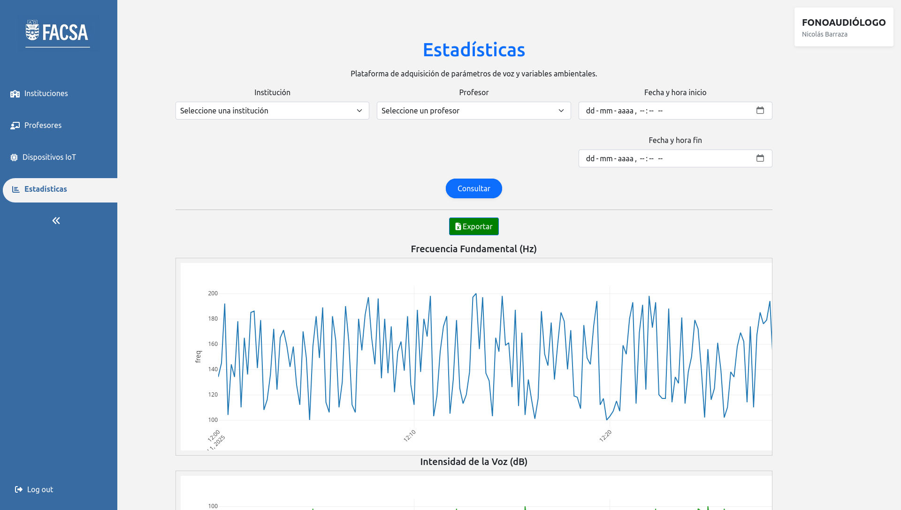
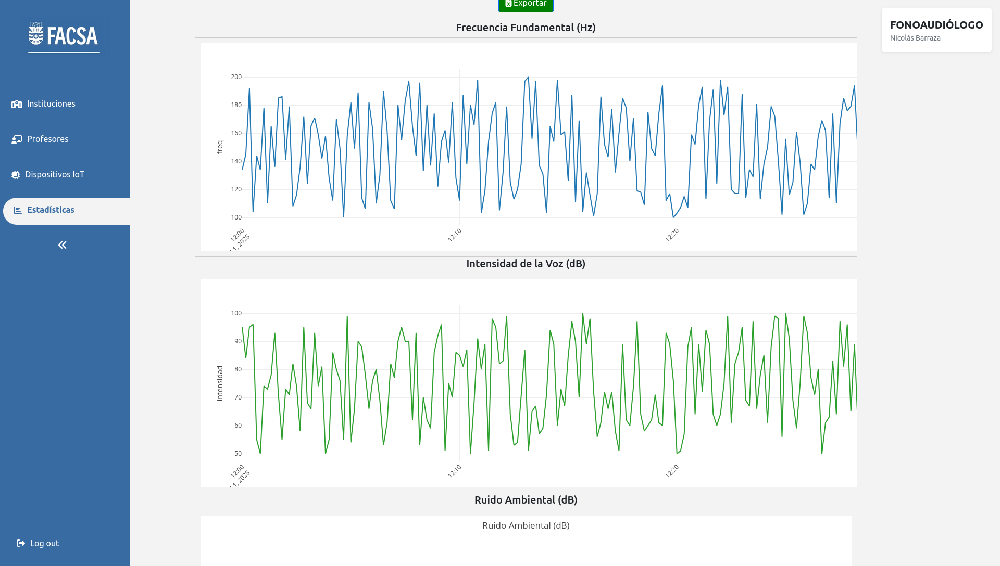
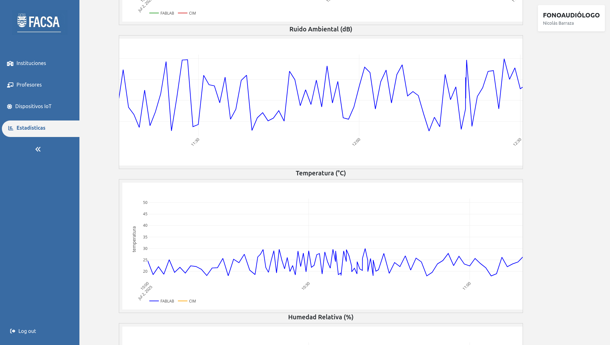
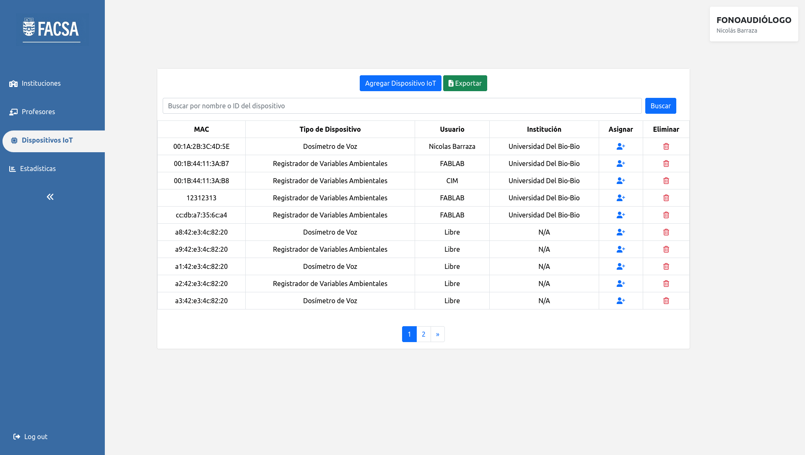
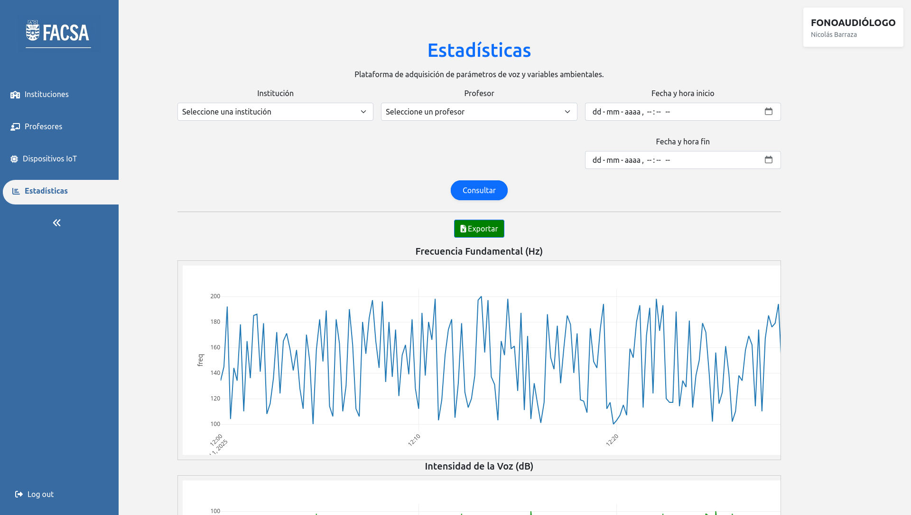
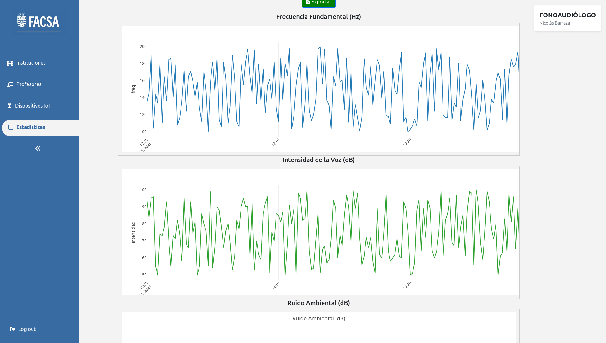
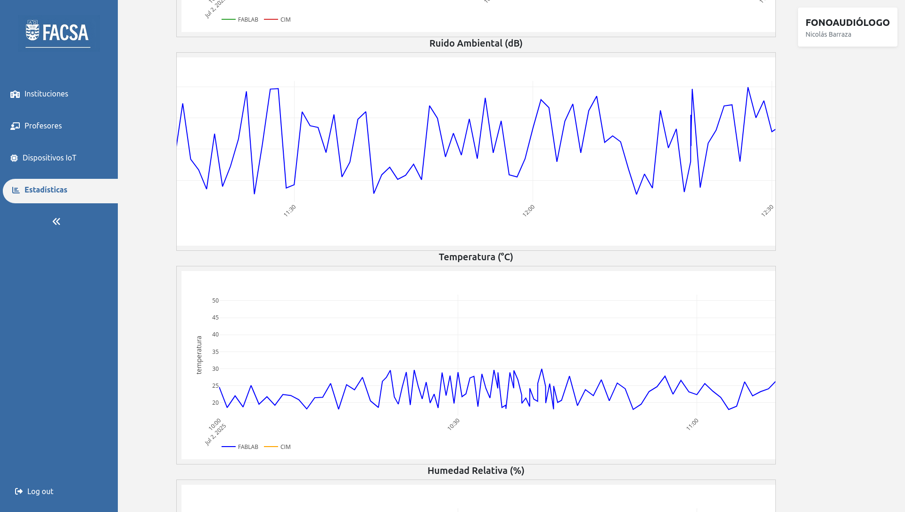
 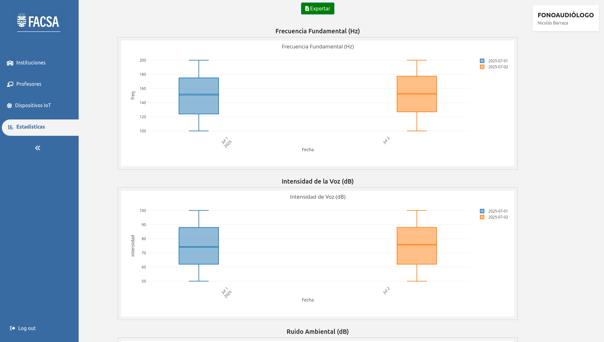
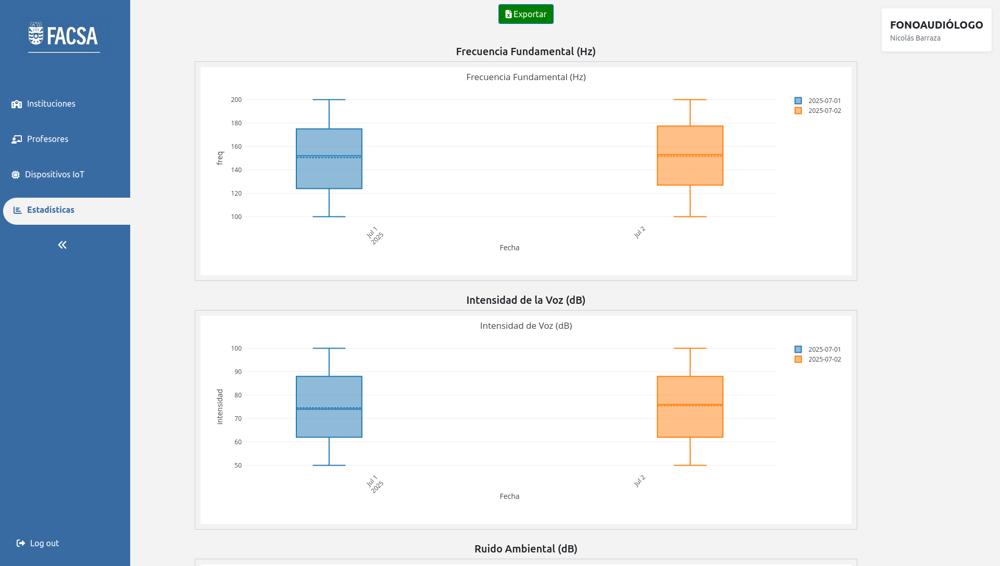